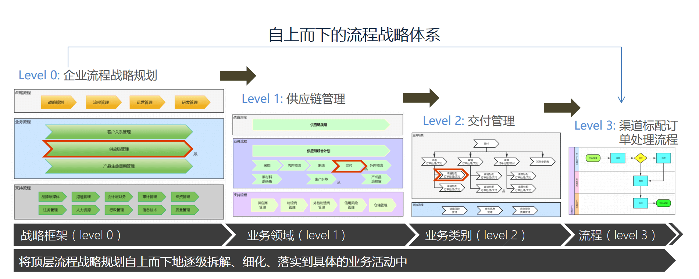

3.1 流程架构介绍
基于企业业务模式基础上，对企业业务流程进行分类及层次结构梳理，并建立上下级流程关联、流程地图，从而形成的管理模型，称之为流程架构。
FlowPortal BPA为您提供了流程咨询界通常使用的二分法、三分法流程架构方法，帮助您自上而下的构建企业流程架构。
二分法：将企业中的流程按照其业务性质，划分为经营流程与支持流程，其基本思路是把企业中的直接经营活动与与支持性的活动区分开来。
三分法：将企业中的流程按照其业务性质，划分为经营流程、支持流程与战略流程，其实质是考虑到战略流程与一般管理流程在性质上的区别，在二分法基础上将其从经营流程或支持流程中划分出来。

Created with the Personal Edition of HelpNDoc: Create iPhone web-based documentation